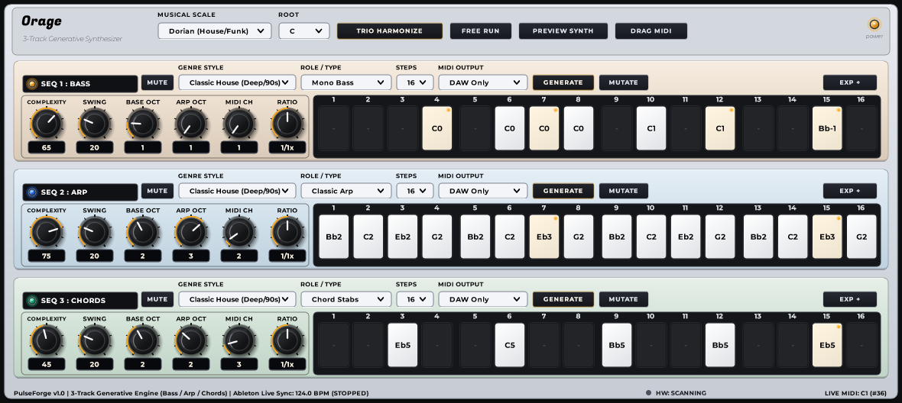
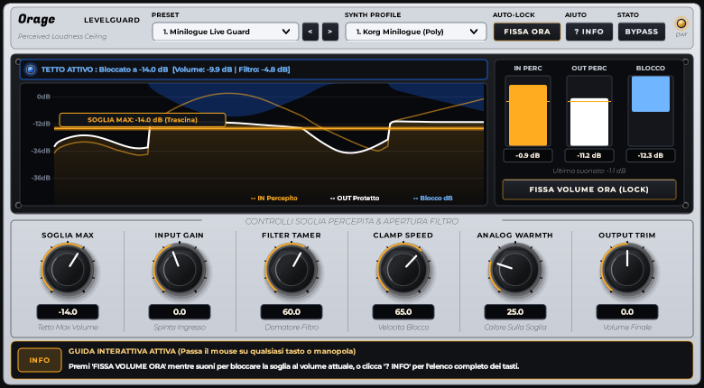
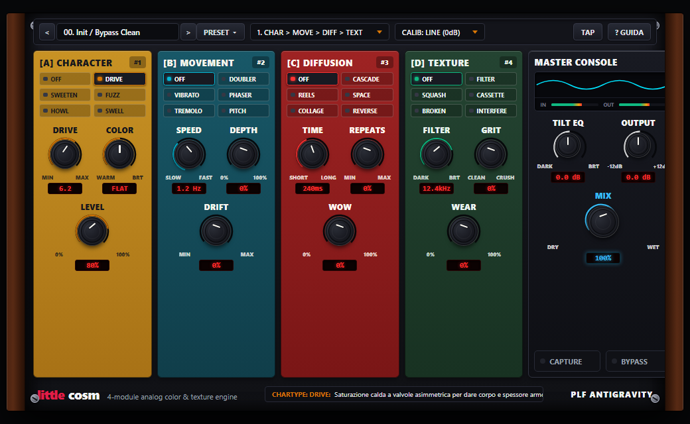

Orage Audio Bundle v1.1 riunisce nella stessa cartella Orage Audio di Ableton Live i 3 plugin essenziali per il tuo studio hardware: PulseForge (sequencer generativo polifonico a 3 tracce), LevelGuard (controllo psicoacustico del volume percepito e Filter Tamer per Minilogue e Crave) e PLF Little Cosm (console analogica multi-effetto a 4 moduli riordinabili e 20 algoritmi vintage).
Motore algoritmico a 3 corsie sincronizzate (Bass, Arp, Chords) che genera linee di basso, arpeggi poliritmici e accordi in scala per pilotare i tuoi synth hardware.

Tetto unidirezionale sul volume percepito (LUFS + Fletcher-Munson) con Filter Tamer dinamico: blocca qualsiasi esplosione di volume quando apri i filtri o cambi preset, lasciandoti libero di scendere.

Console multi-effetto boutique con 4 moduli riordinabili (Character, Movement, Diffusion, Texture), 20 algoritmi analogici, Sustainer Capture, Tilt EQ e 24 preset da studio.

Creato su misura per Korg Minilogue, Behringer Crave e performance dal vivo con sintetizzatori analogici.
Quando apri il Cutoff e la Risonanza sul Crave (Moog Ladder 24dB) o sul Minilogue, l'energia esplode tra 1 kHz e 5 kHz dove l'orecchio umano è fino a 15 dB più sensibile. LevelGuard ascolta con la stessa curva del tuo orecchio e blocca il salto percepito.
A differenza dei normali Vocal Rider che alzano il volume quando suoni piano, LevelGuard interviene 0.0 dB sotto la soglia: puoi chiudere il filtro fino a zero, suonare pianissimo o sfumare in libertà assoluta.
Suona il tuo synth al volume che ti piace nel mix e premi FISSA VOLUME ORA (LOCK): il plugin memorizza gli ultimi 2,5 secondi di suonato e posiziona automaticamente il tetto massimo a quel livello percepito!
1. Korg Minilogue (Poly/Filter), 2. Behringer Crave (Mono Ladder 24dB), 3. Preset Guard (Fast Jam) o 4. Synth Bus.
ANALOG WARMTH applica una morbida saturazione analogica progressiva ai picchi risonanti più estremi; OUTPUT TRIM regola il livello finale nel mix.
Console multi-effetto vintage con 4 moduli riordinabili, 20 algoritmi analogici, Tilt EQ e Sustainer Looper.
DRIVE (overdrive asimmetrico a valvole), SWEETEN (preamp caldo da studio), FUZZ (silicio vintage), HOWL (filtro risonante aggressivo) e SWELL (auto-volume per pad).
DOUBLER (chorus/flanger a nastro), VIBRATO (wow & flutter organico), PHASER (6 stadi all-pass), TREMOLO e PITCH (shimmer d'ottava).
CASCADE (delay stereo multi-tap), REELS (eco a bobine aperte), SPACE (riverbero plate/cavern), COLLAGE (granulare) e REVERSE (eco inverso).
FILTER (SVF risonante), SQUASH (compressore ottico LA-2A), CASSETTE (nastro Type-I), BROKEN e INTERFERE.
CAPTURE congela l'audio in un drone/pad infinito su cui improvvisare; TILT EQ bilancia il timbro globale; include 24 preset di fabbrica + salvataggio/esportazione XML.
Genera al volo linee di basso, arpeggi e progressioni di accordi sincronizzati per i tuoi synth hardware.
TRIO HARMONIZE genera simultaneamente Basso, Arp e Chords in contrappunto; NEW PROGRESSION evolve il giro armonico di 8 battute mantenendo il ritmo.
COMPLEXITY, SWING, BASE OCT, ARP OCT, MIDI CH e RATIO per poliritmie istantanee.
EXP + per Accent, Slide 303, Ratchet, Legato e Velocity.
L'installer eseguibile OrageAudio-Bundle-Installer.exe installa tutti e 3 i plugin (PulseForge, LevelGuard e PLF Little Cosm) nella stessa cartella Orage Audio di Ableton Live e pulisce automaticamente il database SQLite della cache di Ableton.
OrageAudio-Bundle-Installer.exe dal pulsante qui sotto.
PulseForge.vst3, LevelGuard.vst3 e PLF Little Cosm.vst3 in C:\Program Files\Common Files\VST3\Orage Audio\.
Live-plugins-1.db, Live-files.db e PluginScanDb.txt di Ableton Live, garantendo che all'apertura Ableton rilevi subito l'ultima versione di tutti e 3 i plugin sotto Orage Audio!